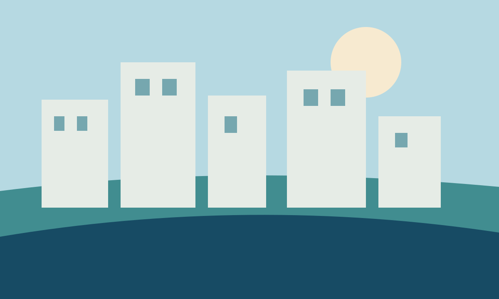

Consultas y pagos en línea
Información sobre los servicios de consulta y pago.
Ver informaciónAccesos disponibles en el portal institucional.
Información sobre los servicios de consulta y pago.
Ver informaciónInformación sobre los tributos municipales.
Ver informaciónConsulta el Texto Único de Procedimientos Administrativos.
Ver informaciónAcceso a información de licencias.
Ver informaciónConoce los canales de participación vecinal.
Ver informaciónCanales de atención a vecinos.
Ver informaciónExplora información sobre la ciudad y el Plan Maestro de Desarrollo de Costa Verde 2026–2040.
Explorar ciudad
23 de octubre de 2026
Ver información19 de octubre de 2026
Ver informaciónConsulta las publicaciones de la municipalidad.
Ver información